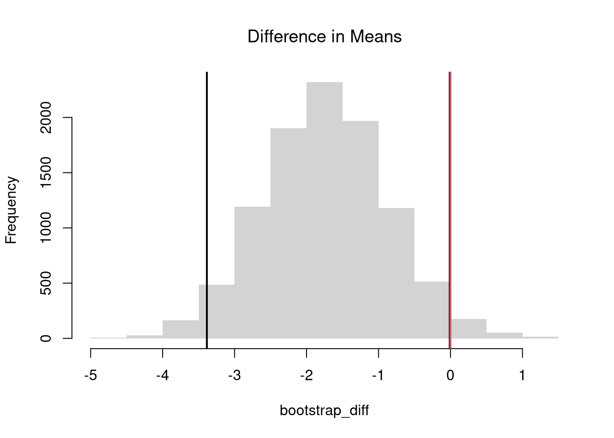
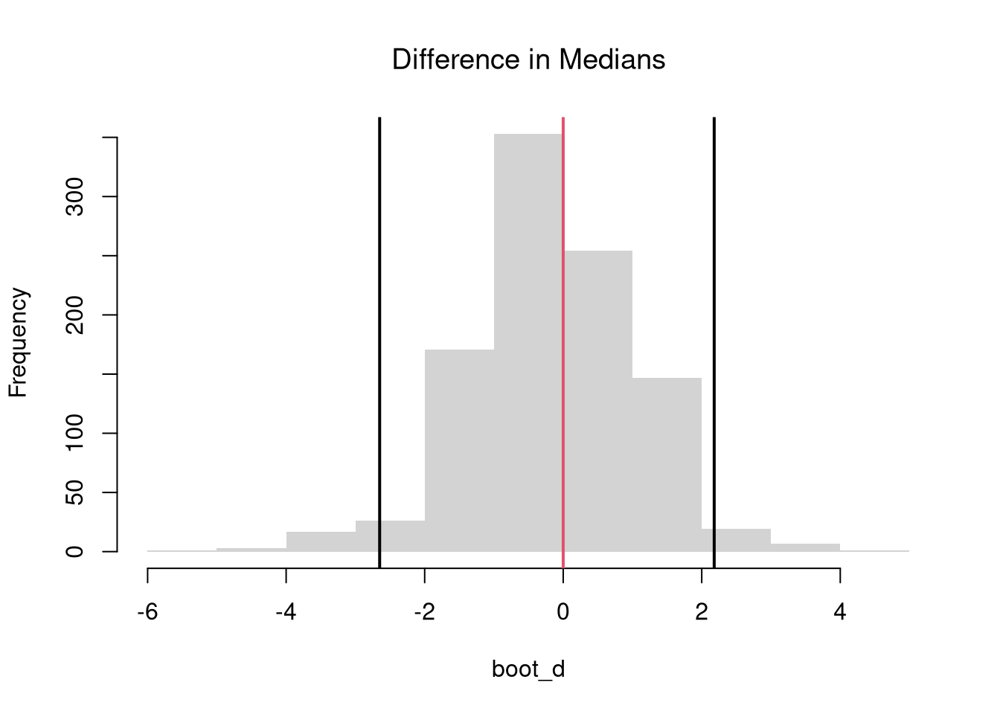
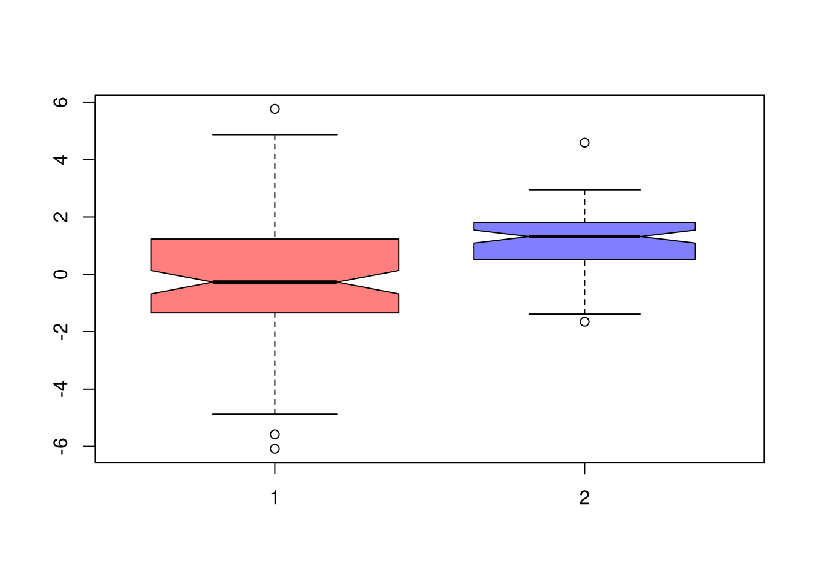

Code
# Install R Data Package and Load in
install.packages('wooldridge') # only once
library('wooldridge') # "load" anytime you want to use the data
?wooldridge # details about the package
?wage1 # details about the dataset we wantFor mixed data, \(\hat{Y}_{i}\) is a cardinal variable and \(\hat{X}_{i}\) is a factor variable (typically unordered). For such “grouped data”, we analyze associations via group comparisons. The basic idea is best seen in a comparison of two samples, which corresponds to an \(\hat{X}_{i}\) with two categories. For example, the heights of men and women in Canada or the homicide rates in two different American states.
We will consider the wages for people with and without completing a degree. pTo have this data on our computer, we must first install the “wooldridge” package once. Then we can access the data at any time by loading the package.
# Install R Data Package and Load in
install.packages('wooldridge') # only once
library('wooldridge') # "load" anytime you want to use the data
?wooldridge # details about the package
?wage1 # details about the dataset we wantTo compare wages for people with and without completing a degree, we start by making a histogram for both groups.
library('wooldridge')
## Group 1
X1_id <- wage1[,'educ'] == 15
Y1 <- wage1[X1_id, 'wage']
## Group 2
X2_id <- wage1[,'educ'] == 16
Y2 <- wage1[X2_id, 'wage']
# Initial Summary Figure
bks <- seq(0, 24, by=1.5)
dlim <- c(0,.2)
cols <- c(rgb(1,0,0,.5), rgb(0,0,1,.5))
hist(Y1, breaks=bks, ylim=dlim,
col=cols[1], xlab='Wages',
freq=F, border=NA, main='')
hist(Y2, breaks=bks, ylim=dlim,
col=cols[2],
freq=F, border=NA, add=T)
legend('topright',
col=cols, pch=15,
legend=c('15 Years', '16 Years'),
title='School Completed')
The histogram may show several differences between groups or none at all. Often, the first statistic we investigate for hypothesis testing is the mean.
We often want to know if the means of different samples are the same or different. To test this hypothesis, we compute the means separately for each sample and then examine the differences term \[\begin{eqnarray} \hat{D} = \hat{M}_{Y1} - \hat{M}_{Y2}, \end{eqnarray}\] with a null hypothesis that there is no difference in the population means.
Just as with one sample tests, we can compute a standardized differences, where \(D\) is converted into a \(t\) statistic. Note, however, that we have to compute the standard error for the difference statistic, which is a bit more complicated. However, this allows us to easily conduct one or two sided hypothesis tests using a standard normal approximation.
The above procedure generalized from differences in means to other quantiles statistics like medians. To start, we plot the ECDF’s for both groups.
# Quantile Comparison
## Distribution 1
F1 <- ecdf(Y1)
plot(F1, col=cols[1],
pch=16, xlab='Wages',
main='Comparing Medians',
font.main=1, bty='n')
## Median 1
med1 <- quantile(F1, probs=0.5)
segments(med1, 0, med1, 0.5, col=cols[1], lty=2)
abline(h=0.5, lty=2)
## Distribution 2
F2 <- ecdf(Y2)
plot(F2, add=TRUE, col=cols[2], pch=16)
## Median 2
med2 <- quantile(F2, probs=0.5)
segments(med2, 0, med2, 0.5, col=cols[2], lty=2)
## Legend
legend('bottomright',
col=cols, pch=15,
legend=c('Grade 15', 'Grade 16'),
title='School Completed')
The above procedure is quite general and extends to other quantiles. Note that bootstrap tests can perform poorly with highly unequal variances or skewed data. To see this yourself, make a simulation with skewed data and unequal variances.
If we want to test for the differences in medians across groups with independent observations, we can also use notches in the boxplot. If the notches of two boxes do not overlap, then there is rough evidence that the difference in medians is statistically significant. The square root of the sample size is also shown as the bin width in each boxplot.1
boxplot(Y1, Y2,
col=cols,
notch=T,
varwidth=T)
In principle, we can also examine whether there are differences in spread (sd or IQR) or shape (skew or kurtosis). More often, however, we examine whether there are any differences in the distributions.
We can also examine whether there are any differences between the entire distributions. We typically start by plotting the data using ECDF’s or a boxplot, and then calculate a statistic for hypothesis testing. Which plot and test statistic depends on how many groups there are.
One useful visualization for two groups is to plot the quantiles against one another: a quantile-quantile plot. I.e., the first data point on the bottom left shows the first quantile for both distributions.
# Wage Data (same as from before)
#library(wooldridge)
#Y1 <- sort( wage1[wage1[,'educ'] == 15, 'wage'])
#Y2 <- sort( wage1[wage1[,'educ'] == 16, 'wage'] )
# Compute Quantiles
quants <- seq(0,1,length.out=101)
Q1 <- quantile(Y1, probs=quants)
Q2 <- quantile(Y2, probs=quants)
# Compare Distributions via Quantiles
#ry <- range(c(Y1, Y2))
#plot(ry, c(0,1), type='n', font.main=1,
# main='Distributional Comparison',
# xlab="Quantile",
# ylab="Probability")
#lines(Q1, quants, col=2)
#lines(Q2, quants, col=4)
#legend('bottomright', col=c(2,4), lty=1,
# legend=c(
# expression(hat(F)[1]),
# expression(hat(F)[2])
#))
# Compare Quantiles
ry <- range(c(Y1, Y2))
plot(Q1, Q2, xlim=ry, ylim=ry,
xlab=expression(Q[1]),
ylab=expression(Q[2]),
main='Quantile-Quantile Plot',
font.main=1,
pch=16, col=grey(0,.25))
abline(a=0,b=1,lty=2)
The starting point for hypothesis testing is the Kolmogorov-Smirnov Statistic: the maximum absolute difference between two CDF’s over all sample data \(y \in \{Y_1\} \cup \{Y_2\}\). \[\begin{eqnarray} \hat{KS} &=& \max_{y} |\hat{F}_{1}(y)- \hat{F}_{2}(y)|^{p}, \end{eqnarray}\] where \(p\) is an integer (typically 1). An intuitive alternative is the Cramer-von Mises Statistic: the sum of absolute differences (raised to an integer, typically 2) between two CDF’s. \[\begin{eqnarray} \hat{CVM} &=& \sum_{y} | \hat{F}_{1}(y)- \hat{F}_{2}(y)|^{p}. \end{eqnarray}\]
# Distributions
y <- sort(c(Y1, Y2))
F1 <- ecdf(Y1)(y)
F2 <- ecdf(Y2)(y)
library(twosamples)
# Kolmogorov-Smirnov
KSq <- which.max(abs(F2 - F1))
KSqv <- round(twosamples::ks_stat(Y1, Y2),2)
# Cramer-von Mises Statistic (p=2)
CVMqv <- round(twosamples::cvm_stat(Y1, Y2, power=2), 2)
# Visualize Differences
plot(range(y), c(0,1), type="n", xlab='x', ylab='ECDF')
lines(y, F1, col=cols[1], lwd=2)
lines(y, F2, col=cols[2], lwd=2)
# KS
title( paste0('KS: ', KSqv), adj=0, font.main=1)
segments(y[KSq], F1[KSq], y[KSq], F2[KSq], lwd=1.5, col=grey(0,.75), lty=2)
# CVM
title( paste0('CVM: ', CVMqv), adj=1, font.main=1)
segments(y, F1, y, F2, lwd=.5, col=grey(0,.2))
Just as before, you use bootstrapping for hypothesis testing.
twosamples::ks_test(Y1, Y2)
## Test Stat P-Value
## 0.2892157 0.0915000
twosamples::cvm_test(Y1, Y2)
## Test Stat P-Value
## 2.084253 0.089500With multiple groups, you will want to begin with a summary figure (such as a boxplot). We can also tests the equality of all distributions (whether at least one group is different). The Kruskal-Wallis test examines \(H_0:\; F_1 = F_2 = \dots = F_G\) versus \(H_A:\; \text{at least one } F_g \text{ differs}\), where \(F_g\) is the continuous distribution of group \(g=1,...G\). This test does not tell us which group is different.
To conduct the test, first denote individuals \(i=1,...n\) with overall ranks \(\hat{r}_1,....\hat{r}_{n}\). Each individual belongs to group \(g=1,...G\), and each group \(g\) has \(n_{g}\) individuals with average rank \(\bar{r}_{g} = \sum_{i} \hat{r}_{i} /n_{g}\). The Kruskal Wallis statistic is \[\begin{eqnarray} \hat{KW} &=& (N-1) \frac{\sum_{g=1}^{G} n_{g}( \bar{r}_{g} - \bar{r} )^2 }{\sum_{i=1}^{n} ( \hat{r}_{i} - \bar{r} )^2}, \end{eqnarray}\] where \(\bar{r} = \frac{n+1}{2}\) is the grand mean rank.
In the special case with only two groups, \(G=2\), the Kruskal Wallis test reduces to the Mann–Whitney U test (also known as the Wilcoxon rank-sum test). In this case, we can write the hypotheses in terms of individual outcomes in each group, \(Y_i\) in one group \(Y_j\) in the other; \(H_0: Prob(Y_i > Y_j)=Prob(Y_i > Y_i)\) versus \(H_A: Prob(Y_i > Y_j) \neq Prob(Y_i > Y_j)\). The corresponding test statistic is \[\begin{eqnarray} \hat{U} &=& \min(\hat{U}_1, \hat{U}_2) \\ \hat{U}_g &=& \sum_{i\in g}\sum_{j\in -g} \Bigl[\mathbf 1( \hat{Y}_{i} > \hat{Y}_{j}) + \tfrac12\mathbf 1(\hat{Y}_{i} = \hat{Y}_{j})\Bigr]. \end{eqnarray}\]
library(Ecdat)
data(Caschool)
Caschool[,'stratio'] <- Caschool[,'enrltot']/Caschool[,'teachers']
# Do student/teacher ratio differ for at least 1 county?
# Single test of multiple distributions
kruskal.test(Caschool[,'stratio'], Caschool[,'county'])
##
## Kruskal-Wallis rank sum test
##
## data: Caschool[, "stratio"] and Caschool[, "county"]
## Kruskal-Wallis chi-squared = 161.18, df = 44, p-value = 2.831e-15
# Multiple pairwise tests
# pairwise.wilcox.test(Caschool[,'stratio'], Caschool[,'county'])When we test a hypothesis, we start with a claim called the null hypothesis \(H_0\) and an alternative claim \(H_A\). Because we base conclusions on sample data, which has variability, mistakes are possible. There are two types of errors:
| True Situation | Decision: Fail to Reject \(H_0\) | Decision: Reject \(H_0\) |
|---|---|---|
| \(H_0\) is True | Correct (no detection) | Type I Error (False Positive) |
| \(H_0\) is False | Type II Error (False Negative; missed detection) | Correct (effect detected) |
The probability of Type I Error is called significance level and denoted by \(Prob(\text{Type I Error}) = \alpha\). The probability of correctly rejecting a false null is called power and denoted by \(\text{Power} = 1 - \beta = 1 - Prob(\text{Type II Error})\).
Significance is often chosen by statistical analysts to be \(\alpha=0.05\). Power is less often chosen, instead following from a decision about power.
There is an important Trade-off for fixed sample sizes: Increasing significance (fewer false positive) often lowers power (more false negatives). Generally, power depends on the effect size and sample size: bigger true effects and larger \(n\) make it easier to detect real differences (higher power, lower \(\beta\)).
Other Statistics
Let each group \(g\) have median \(\tilde{M}_{g}\), interquartile range \(\hat{IQR}_{g}\), observations \(n_{g}\). We can compute standard deviation of the median as \(\tilde{S}_{g}= \frac{1.25 \hat{IQR}_{g}}{1.35 \sqrt{n_{g}}}\). As a rough guess, the interval \(\tilde{M}_{g} \pm 1.7 \tilde{S}_{g}\) is the historical default and displayed as a notch in the boxplot. See also https://www.tandfonline.com/doi/abs/10.1080/00031305.1978.10479236.↩︎